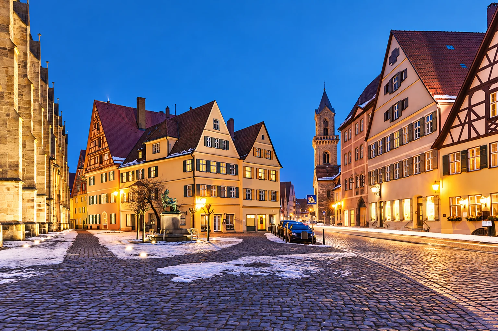
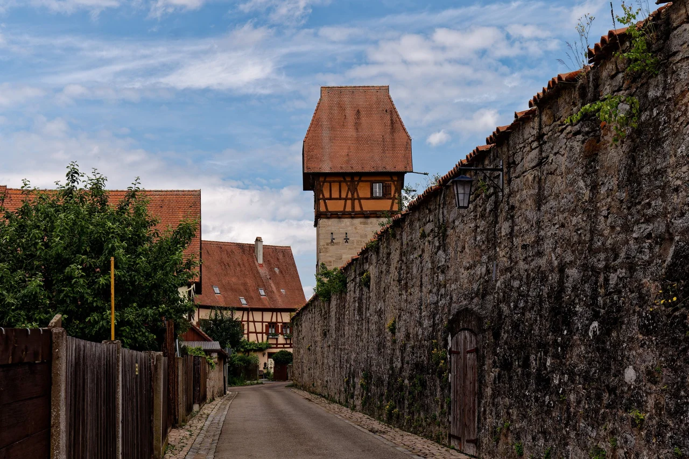
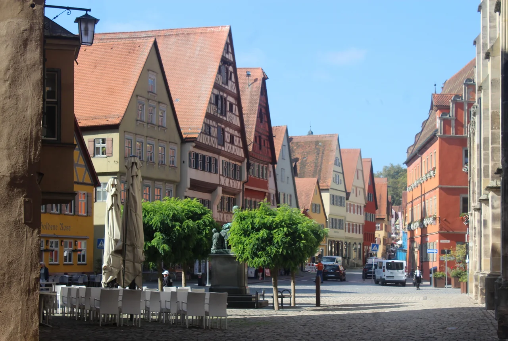
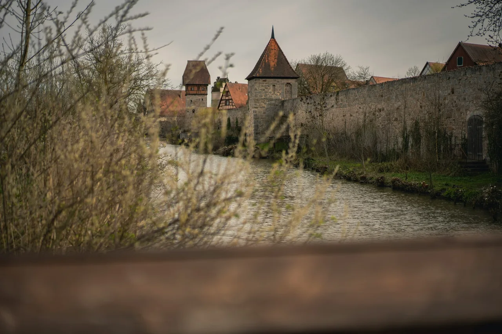
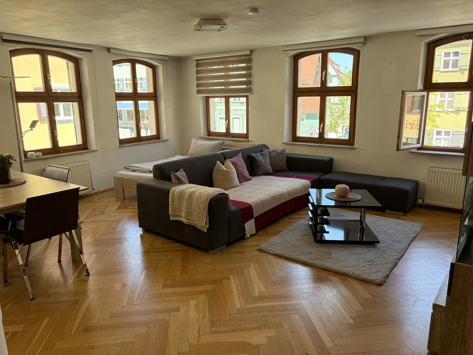

01
01HISTORISCH & GEMÜTLICH
AltstadtApartment
- bis 4 Personen
- 80 m²
- 2 Schlafzimmer
- Wohnbereich
- Eigene Küche

MITTEN IN DINKELSBÜHL
AltstadtApartments Dinkelsbühl
Großzügig wohnen im Herzen einer der schönsten
Altstädte Deutschlands.
ZWEI BESONDERE FERIENWOHNUNGEN IN HISTORISCHEM AMBIENTE
01HISTORISCH & GEMÜTLICH
 02
02GROSSZÜGIG & INDIVIDUELL
Persönlicher Kontakt.
Kurze Wege zur Buchung.
Cafés und Sehenswürdigkeiten
bequem zu Fuß erreichen.
Eigene Küche und Wohnbereich.
Zeit in Ihrem Rhythmus.
Wohnen mitten in
der Dinkelsbühler Altstadt.
DINKELSBÜHL ERLEBEN
Schlendern Sie durch malerische Gassen, entdecken Sie historische Plätze und genießen Sie regionale Spezialitäten. Ihr Ausgangspunkt liegt mitten in der Altstadt.
Mehr über Dinkelsbühl


IHRE AUSZEIT IN UNSEREN APARTMENTS
Unsere beiden AltstadtApartments verbinden den Charakter eines historischen Hauses mit modernem Komfort. Für gemeinsame Tage – und einen Rückzugsort ganz für sich.
Apartments entdecken
ZWEI APARTMENTS · EINE GEMEINSAME ADRESSE
Das AltstadtApartment und das DesignApartment befinden sich beide in der Nördlinger Straße 16. Zwei separate Ferienwohnungen – mit Cafés, Restaurants und Sehenswürdigkeiten in Laufnähe.
Kostenlose Parkplätze sind laut Gastgeber in etwa fünf Gehminuten erreichbar. Die genaue Anfahrt und Anreise stimmen Sie vorab mit Kurt Stollenmeier ab.
GÄSTEBEWERTUNGEN
So bewerten Gäste unsere beiden Apartments auf Booking.com.
IHRE FERIENWOHNUNG
IHRE FERIENWOHNUNG
Bewertungsstand: September 2026 · Sterne visualisieren die Gästebewertung von 8,5 / 10.
Gut zu wissen
Die wichtigsten Antworten für Ihre Ferienwohnung in Dinkelsbühl.
Das AltstadtApartment bietet Platz für bis zu 4 Gäste. Im DesignApartment können bis zu 6 Gäste übernachten. Die Wohnungen werden einzeln gebucht.
Ja. Beide Ferienwohnungen verfügen über kostenloses WLAN und jeweils eine voll ausgestattete Küche.
Kostenlose Parkplätze sind laut Gastgeber in etwa 5 Gehminuten erreichbar. Bitte fragen Sie vor der Anreise nach dem passenden Parkplatz und der Anfahrtsbeschreibung.
Laut den Buchungsbedingungen ist die Anreise zwischen 15:00 und 18:00 Uhr und die Abreise bis 10:00 Uhr vorgesehen, sofern nichts anderes vereinbart wurde.
Haustiere sind nur nach ausdrücklicher Vereinbarung mit dem Gastgeber erlaubt. Bitte klären Sie dies vor der Buchung. In den Unterkünften darf nicht geraucht werden.
Über „Aufenthalt planen“ gelangen Sie zur Auswahl der Apartments und zur bestehenden Smoobu-Buchung. Dort prüfen Sie die verfügbaren Termine und die für Ihren Aufenthalt geltenden Konditionen.
Ihr Gastgeber
Sie haben eine Frage zu den Apartments oder Ihrem Aufenthalt in Dinkelsbühl? Ich helfe Ihnen gerne persönlich weiter und freue mich auf Ihre Nachricht.
Bis bald in Dinkelsbühl.